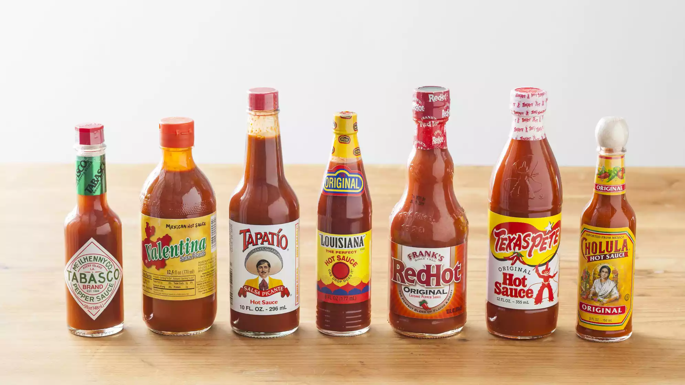

Spice Up Yo Life
Hola amigos!
My name is Megan and I am a hot sauce connoisseur. I have decided to enlighten viewers by giving my POV ratings on some well-known and frequently used hot sauces. Let's get right to it! 
Tabasco, Valentina, Tapatio, Louisiana, Frank's, TexasPete, and Cholula
Sauces & Ratings
I rated seven different brands of hot sauces on a 1-7 scale. Ranging from the lowest score of 1 and the highest & hottest score of 7. This scale is more appropraite because it does not allow an inbetween or on the fence answer. Disclosure: This is purely my opinion. Try them for yourself and decide!
Click on the links below to read more or to purchase your favorite hot sauces and other hot merchandise:
Food Dude
Here is a list of easy and delish foods that you should totally spice up: